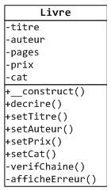
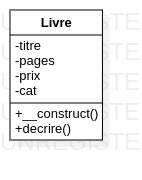
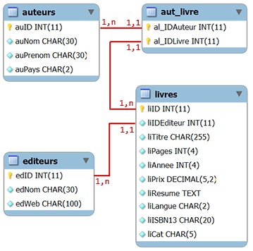

Un constructeur est une méthode qui est
automatiquement appelée quand on instancie la classe.
Rappel : l'instanciation d'une classe se fait avec l'opérateur new : cela crée un objet, ce qui implique la réservation de l'espace mémoire occupé par cet objet, plus précisément par ses attributs.
En PHP, il est également possible de définir un destructeur qui est une méthode particulière
automatiquement appelée juste avant que l'objet ne soit supprimé de la mémoire.
Constructeur
Un constructeur sert à réaliser toutes les actions à effectuer avant de pouvoir utiliser "convenablement" l'objet créé.
Pour les classes les plus simples, le constructeur sert notamment à donner une valeur initiale à chaque attribut. Pour des classes plus compliquées, le constructeur peut également être utilisé pour
vérifier l'existence d'un fichier ou l'ouvrir, se connecter à une base de données, etc.
En PHP, même si c'est relativement rare, une classe peut ne pas définir de constructeur. Nous allons commencer par étudier ce qui se passe dans ce cas. Nous étudierons ensuite comment définir un constructeur.
Sans constructeur
En l'absence de constructeur, si les attributs n'ont pas de valeur assignée lors de leur définition, ils ne sont tout
simplement pas initialisés après la création de l'objet, ce qui entraîne le déclenchement d'une erreur fatale qui arrête le script
si on tente de consulter leur valeur, ... avant qu'ils
ne soient initialisés.
Illustration :
Si la classe ne définit pas de constructeur, les parenthèses qui suivent son nom lors de son
instanciation sont facultatives : $objet = new Classe est équivalent à $objet
= new Classe().
Si on n'indique pas le type d'un attribut, et qu'on ne l'initialise pas, alors il est par défaut initialisé à null.
Définition d'un constructeur
Un constructeur est une méthode magique qui s'appelle __construct().
Si cette méthode __construct est définie dans le code de la classe,
elle sera invoquée automatiquement par PHP lors de l'instanciation de la classe avec
l'opérateur new.
La méthode constructeur __construct() peut accepter des
paramètres qui vont servir à initialiser les valeurs des attributs du nouvel objet créé.
Si le constructeur n'a pas de paramètre, les parenthèses qui suivent le nom de la
classe lors de son instanciation sont facultatives. On peut écrire $objet = new
Classe.
Il ne faut pas indiquer de type de valeur de retour pour la méthode constructeur __construct(). En indiquer un, même void, entraîne
une erreur fatale qui arrête le script.
Avec PHP, il n'est pas possible (comme en Java par exemple) de
surcharger un constructeur.
Conclusion : il est essentiel que tous les attributs d'un objet soient initialisés après sa création avec l'opérateur new.
Rappel : pour des questions de lisibilté, je recommande, quand la classe définit un constructeur, de pas initialiser d'attribut en dehors du constructeur (c'est à dire lors la définition des attributs).
Validation des paramètres
Si on passe des paramètres au constructeur, ceux-ci doivent être validés
avant d'être affectés comme valeur à des attributs.
Si des setters sont implémentés pour les attributs, il est possible de les
appeler depuis le constructeur pour effectuer la mise à jour de la valeur de l'attribut.
L'exemple suivant est une classe Guitare avec des attributs modèle, prix, nombre de cordes,
et remise. Les valeurs de ces attributs sont directement validées dans le constructeur, sauf pour
le prix qui a un setter.
Paramètres dans un tableau
ASTUCE : quand un constructeur (ou une méthode ou une fonction) acceptent
un grand nombre de paramètres, il est pratique d'utiliser un tableau pour passer ces
paramètres.
Le plus pratique est d'utiliser un tableau associatif. On peut ainsi
nommer les paramètres, les passer dans n'importe quel ordre et facilement en ajouter de
nouveaux.
L'exemple suivant instancie des guitares avec les informations trouvées dans un fichier texte
référençant nos guitares en vente. Le fichier s'appelle guitares.txt et se trouve
dans le dossier stock.
Le contenu du fichier est le suivant :
On trouve le même genre de formattage que celui utilisé dans la page sur la lecture de fichiers.
Pour simplifier, on considère que les informations trouvées dans le fichier sont valides et on ne fait
pas de vérifications dans le constructeur de la classe Guitare. Dans ce cas, le constructeur
reçoit en paramètre un tableau à indices numériques.
Destructeur
De la même façon qu'il y a une méthode magique __construct() invoquée
automatiquement par PHP lors de l'instanciation d'une classe, il existe une autre méthode
magique __destruct() qui, si elle est définie, sera invoquée automatiquement par
PHP lors qu'un objet sera supprimé de la mémoire car il n'existe plus aucune référence désignant cet
objet.
Un destructeur sert à libérer les ressources utilisées par l'objet. Dans la pratique, on peut y trouver
par exemple, la fermeture d'un flux ou d'une connexion à une base de données.
La méthode __destruct() de PHP est l'équivalent de la méthode finalize()
en Java.
La méthode __destruct() n'accepte pas de paramètre. Si on la définit avec un ou des
paramètres, le script n'est pas exécuté et s'arrête avec une erreur fatale. De même,
il ne faut pas indiquer de type de valeur de retour pour cette méthode : en indiquer un, même void, entraîne
une erreur fatale qui arrête le script.
L'exemple suivant définit une classe Stock qui contient les objets Guitare de notre stock.
Quand on détruit l'instance de Stock ($stock = null; ou unset($stock);) observez les appels de
destructeurs : le destructeur de l'objet Stock est d'abord invoqué, puis comme il n'existe plus
de référence pointant sur les objets Guitare, leur destructeur est à leur tour invoqué.
Exercice : validation des paramètres

la classe Livre
Reprenez la classe Livre de l'exercice précédent et faites
les tests de validité en appelant les setters dans le constructeur.
Les modifications suivantes doivent être apportées :
- lors de la consctruction de l'objet, si une ou des valeurs passées au constructeur ne sont pas valides, un message d'erreur doit
être affiché sans que le script soit arrêté,
- ensuite, si l'objet créé n'est pas valide (i.e. une des valeurs passées au constructeur n'est pas valide), le nouvel objet est supprimé.
Le message d'erreur affiché doit être de la forme 'Valeur [valeur passée] invalide pour
l'attribut [nom attribut].'
Vous devez tester votre code en instanciant des Livre avec les informations
suivantes qui provoqueront toutes des erreurs :
En utilisant le mode de transmision de paramètre par référence pour la fonction verifLivre(), on a, dans le corps
de cette fonction, deux variables $livre et $l1 (pour le premier livre) qui désignent le même espace mémoire, et cet espace mémoire contient l'unique référence sur l'objet à détruire. En affectant null dans cet espace mémoire, l'objet Livre n'est plus référencé, il est donc détruit.
L'instruction unset($livre) ne fonctionne pas dans le corps de la fonction verifLivre() car elle ne fait
que supprimer la variable (ou "le nom") $livre. Après cette suppression, $l1 continue d'exister et de pointer sur l'objet Livre.
Exercice : tableau de paramètres
L'exercice consiste à instancier des Livre suivant la classe simplifiée
ci-contre avec les informations trouvées dans notre base de données exemple pour
MySQL.
Pour simplifier l'exercice :
- on supprime les setters de la classe et on suppose que les informations provenant de la
base de données sont correctes et n'ont pas besoin d'être validées;
- l'attribut auteur est également supprimé car un livre peut avoir plusieurs auteurs.

la classe Livre

schéma de la base de données php_tuto
Pour que l'exemple fonctionne, il faut bien sûr que la base de donnée de test php_tuto
soit toujours installée sur votre serveur MySQL. N'oubliez pas d'inclure la bibliothéque bib_params.php
pour les paramètres de connexion.
Les informations à passer au constructeur se trouvent dans la table livres. Tous les livres de la table livres seront
affichés triés par titre dans l'ordre croissant. Le tableau retourné par la fonction mysqli_fetch_assoc()
sera passé tel quel au constructeur.
Les objets créés (plus précisément leur référence) seront stockés dans un tableau.
Réalisez une classe BDD (base de données simplifiée voire simpliste), qui encapsule
les appels des fonctions bdConnect() et bdSendRequest() de notre bibliothéque
bib_fonctions.php, et qui définit
une
méthode destructeur qui ferme la connexion à la base de données quand l'objet BDDest supprimé.
Comme pour l'exercice précédent, on utilisera notre base de données exemple pour MySQL.
schéma de la base de données php_tuto
Pour que l'exemple fonctionne, il faut bien sûr que la base de donnée de test php_tuto
soit toujours installée sur votre serveur MySQL. N'oubliez pas d'inclure la bibliothéque bib_params.php
pour les paramètres de connexion.
Le constructeur n'a pas de paramètre. Il réalise la connexion en appelant la fonction
bdConnect() définie dans notre bibliothéque bib_fonctions.php.
La méthode lire() a un seul paramètre : la requête SQL SELECT à envoyer
au serveur de bases de données. Pour simplifier, on ne fera pas de test de validité pour s'assurer qu'on a bien
une requête SELECT.
Les enregistrements sélectionnés par la requête sont renvoyés par la méthode lire() sous la forme
d'un tableau d'enregistrements (i.e. un tableau de tableaux).
Le destructeur ferme la connexion à base de données avec la fonction mysqli_close(). Pour
contrôler que le destructeur est bien appelé, il affichera "Fin du destructeur BDD".
Le script doit afficher la liste des auteurs (nom et prénom) contenus dans la table auteurs.